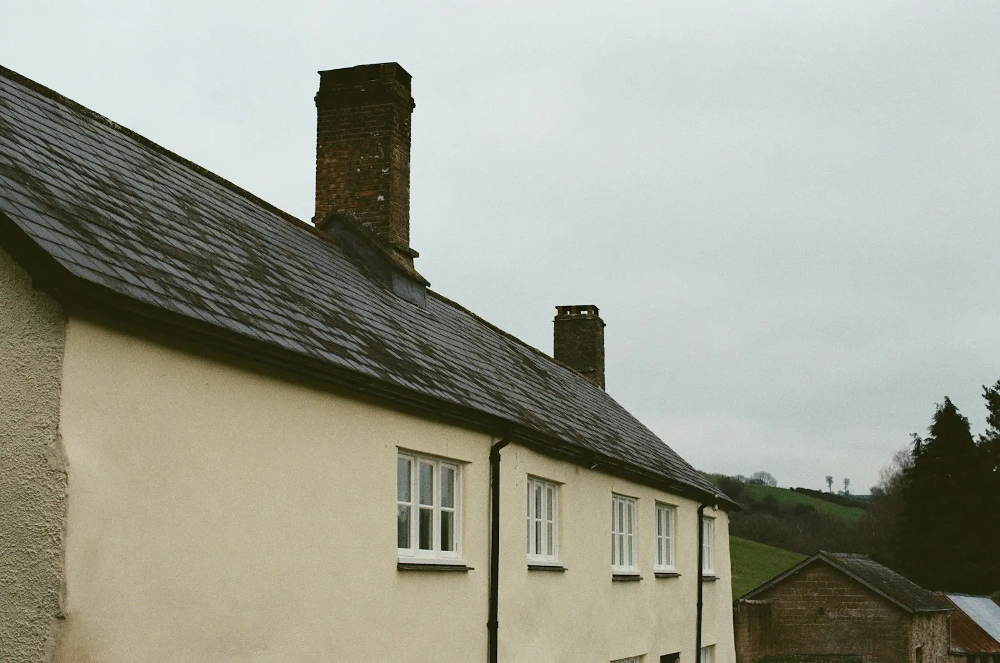
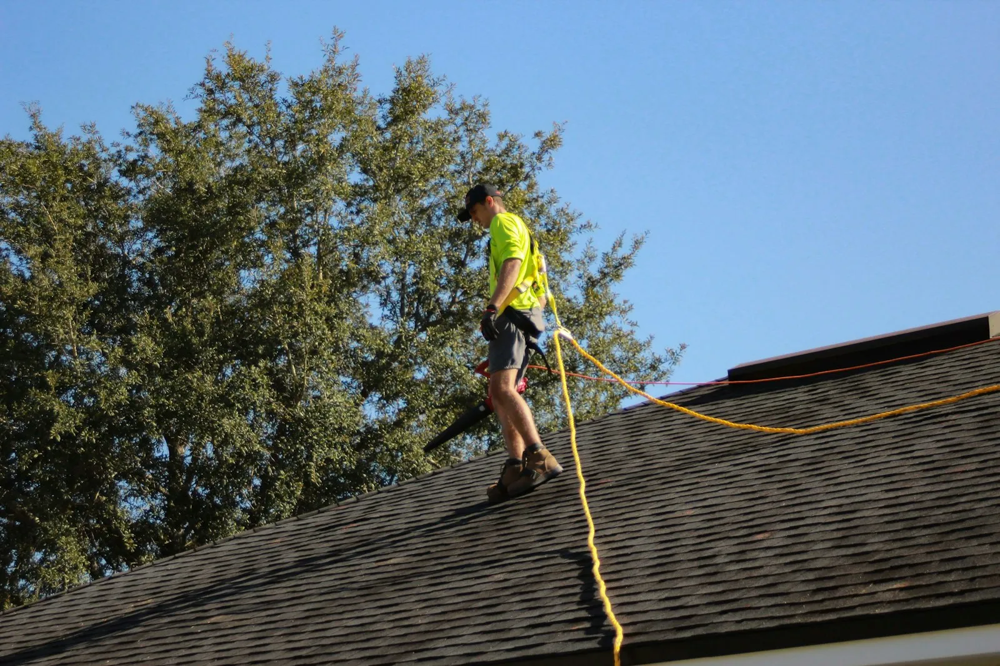

J&F Algemene Dakwerken legt, herstelt en vernieuwt daken in Gent en omgeving. Hellend of plat, een lek of een volledig nieuw dak. Je kan elke dag bellen, van 's morgens 7 tot 's avonds 10.

Klik op een kaart voor meer uitleg. Twijfel je wat je nodig hebt, stuur dan een foto. Dan zeggen we je eerlijk wat zin heeft.
Van maandag tot zondag, van 7 uur 's morgens tot 10 uur 's avonds. Ook in het weekend neem je gewoon de telefoon.
Nu bereikbaar
Bel of stuur een berichtje met een foto. Voor een offerte komen we altijd eerst kijken.

Ja. Je krijgt pas een prijs als het dak bekeken is, zodat er achteraf geen verrassingen zijn.
Elke dag, ook op zaterdag en zondag, van 7 tot 22 uur.
Zeker. Een losse pan of een lekkende goot wordt beter snel aangepakt, voor er meer schade komt.
Ook in de gemeenten rond Gent. Bel even, dan hoor je of het past.
Ik maakte deze demo voor jullie om te tonen wat er kan. Na een kort gesprek maak ik er iets veel persoonlijkers van, helemaal naar jullie wens.
Vrijblijvend. Ik kom langs of we bellen.
Op maat, op jullie eigen domein.
Geen voorschot. Jullie betalen pas als alles klaar is.
Hosting, domeinnaam en kleine wijzigingen, zoals nieuwe openingsuren.
Omdat een voorbeeld meer zegt dan een mail. Zo zien jullie meteen wat er kan, en het kost jullie niets.
Nee. Het gesprek is vrijblijvend. Vinden jullie het niks, dan is het daarmee gedaan.
Na ons gesprek staat jullie site binnen 10 tot 14 dagen online.
Zeker. Jullie domeinnaam kan gewoon blijven, de nieuwe site komt in de plaats van de oude.
Nee, dat doe ik op basis van ons gesprek. Eigen foto's zijn mooi meegenomen, maar niet nodig om te starten.